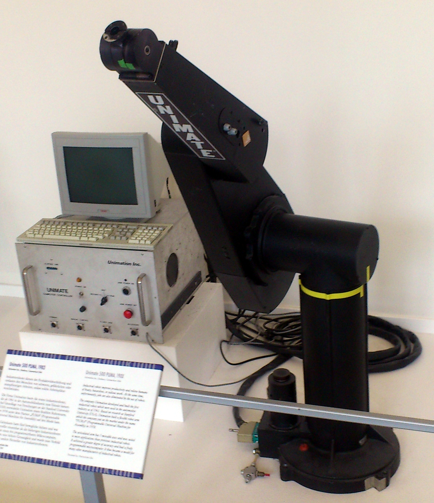
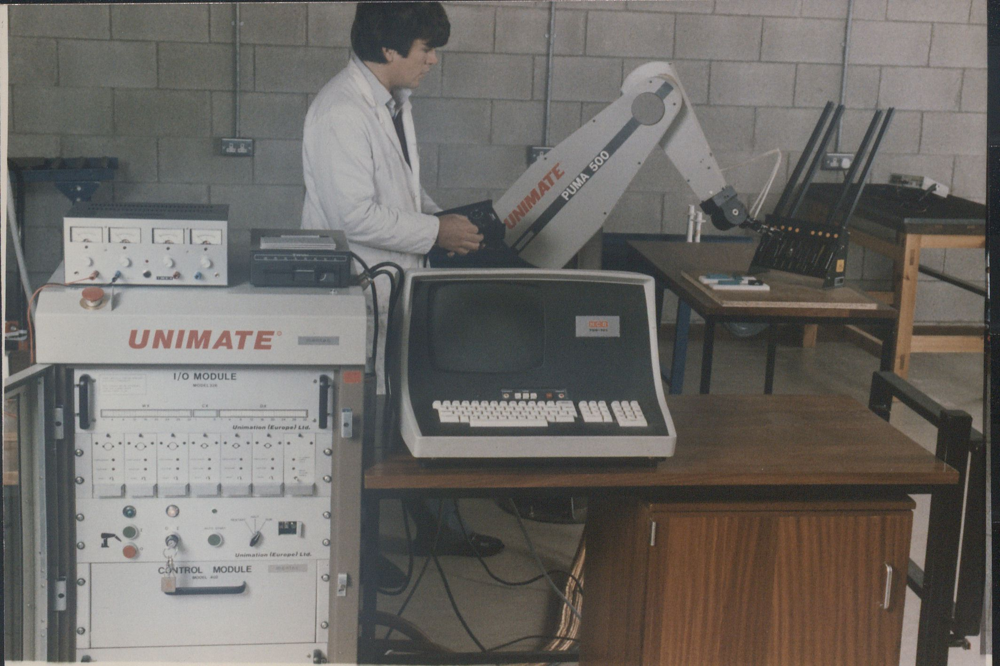
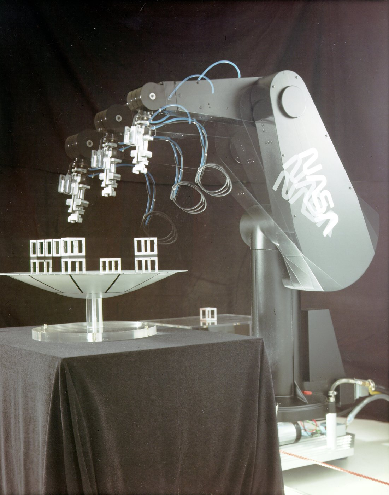

Unimation PUMA Teach Pendant / VAL
Programming a robot by grabbing it — jog buttons, a limp-mode arm, and a record key

Overview
The PUMA (Programmable Universal Machine for Assembly) was Unimation's electric robot arm, designed by Victor Scheinman out of his Stanford arm for General Motors and introduced around 1978. Its defining interface was the handheld 'manual control unit' — the teach pendant — and VAL, the first robot programming language to see wide industrial use. The VAL User's Guide (June 1980, version 12) documents the pendant in detail.
The pendant carried six mode buttons along one edge — OFF, COMP (computer), JOINT, FREE, WORLD, TOOL — a speed knob with a full-counterclockwise INC (increment) setting, joint-select toggle switches held toward '+' or '−', a RECORD button, and a small display. In JOINT mode you jogged individual joints; WORLD mode moved the arm along world axes; TOOL mode moved along the tool's own orientation. FREE mode released the servos: 'the servo system releases control of that joint, and you can move it to a new position by pushing on the members of the robot.' Press RECORD and the controller inserted a MOVET or MOVEST instruction into the program, naming the point NEW1, NEW2, NEW3… The OFF button was the panic halt.
VAL ran on a DEC LSI-11 inside the Unimation controller and grew into a full environment — teach-mode move recording, joint-level commands, and edit/execute sessions (.EDIT DEMO.1, .HERE PART, EXECUTE). Nokia built roughly 1,500 PUMA robots in the 1980s; General Motors donated the original prototype to the Smithsonian in 2002; a Unimate 500 PUMA (1983) with control unit and terminal is exhibited at the Deutsches Museum in Munich.
Deep dive
The teach pendant's deepest idea was that an assembly robot would be programmed by a human's hands, not a compiler. In teach mode you steered the arm to a position — jog toggles for coarse motion, the INC setting for servo-resolution increments — and pressed RECORD to save the point. FREE mode went further: it let the operator physically push the arm through a motion while the controller captured the path. This is programming-by-manipulation, the ancestor of today's kinesthetic teaching in collaborative robotics, and it made the boundary between human and machine physical — the OFF panic button, and a philosophy in which the robot is never autonomous while a person shares its space.
The manual control unit was a heavy handheld box tethered to the controller. Mode switches ran along the edge, the speed control doubled as an increment dial, and the joint toggles had to be held, so every programmed move was deliberate. The display reported teach mode, errors, and calibration status, and the pendant's commands mapped onto VAL instructions the operator never typed. Later pendants added the three-position dead-man/enabling switch that became an industry safety standard — a direct descendant of the PUMA pendant's hold-to-operate logic.
VAL bridged pendant and program, combining a motion command language ('MOVE TO PART', 'APPRO', 'DEPART') with an editor and executor. MIT's AI Lab famously ran a PUMA 600 from a Lisp Machine via VAL in 1982 ('Talking to the Puma'). Its significance for HCI is that the program was written in the machine's own joint and world coordinates, captured from the human's gestures rather than from text — the teach-pendant-plus-script pattern that still defines how industrial robots are configured today.
Team & pioneers
- Victor Scheinman. Designer of the PUMA arm; earlier the Stanford arm
- Unimation Inc. Manufacturer (Danbury, CT); the PUMA was developed with General Motors
- Bruce Shimano. VAL language developer at Unimation (VAL User's Guide version 12, June 1980)
- General Motors. Original sponsor of the PUMA program; donated the prototype to the Smithsonian in 2002
Media


Sources
- User's Guide to VAL (398H2A), Unimation Inc., June 1980 — teach pendant and FREE-mode documentation
- Wikipedia — Programmable Universal Machine for Assembly
- MIT AI Lab — 'Talking to the Puma' (1982)
- Wikimedia Commons — Unimate 500 PUMA at Deutsches Museum (CC BY-SA 3.0)
- Richard Voyles' PUMA page — manuals and retrofit documentation